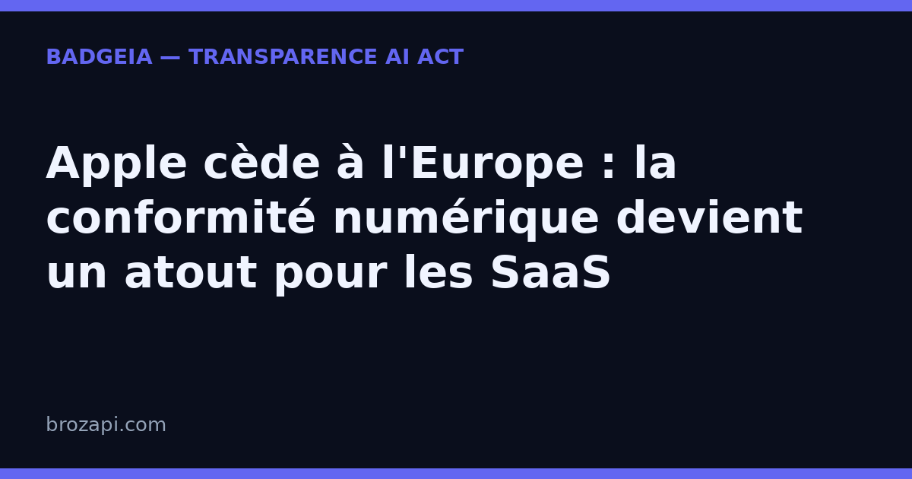

Apple cède à l'Europe : la conformité numérique devient un atout pour les SaaS

Publié le 22 août 2026 · Lecture : 7 minutes · Par l'équipe Brozapi
Apple vient de plier. Le géant américain a annoncé, cette semaine, un nouveau cadre de règles pour son App Store dans l'Union européenne, présenté comme la réponse à ses « désaccords avec la Commission européenne » sur les conditions commerciales et la distribution d'applications alternatives. En clair : après des mois de résistance, Apple s'aligne.
Ce n'est pas un détail technique réservé aux développeurs d'applications mobiles. C'est le dernier signe en date d'un mouvement bien plus large qui change les règles du jeu pour toutes les entreprises du numérique. En Europe, la régulation n'est plus une menace lointaine : elle se normalise. Et pour une PME, un éditeur de logiciel ou un site indépendant, cette règle du jeu peut devenir un argument de vente.
Ce qui vient de changer dans l'App Store européen
Concrètement, Apple unifie ses conditions pour tous les développeurs qui distribuent des applications dans l'Union européenne. Les nouveautés sont de trois ordres.
D'abord, des commissions simplifiées. Les applications passant par le système d'achat intégré d'Apple conservent une commission ; celles qui utilisent un prestataire de paiement alternatif en paient une moindre ; et un niveau réduit est prévu pour les achats qui renvoient vers un site externe. Apple baisse aussi ces taux pour les développeurs du programme « Small Business » et de plusieurs partenariats.
Ensuite, les paiements alternatifs deviennent possibles. Un développeur pourra proposer à la fois l'achat intégré et un autre moyen de paiement, à condition de conserver son choix douze mois pour « offrir cohérence et clarté aux utilisateurs ».
Enfin, la fameuse « Core Technology Fee » disparaît. Cette taxe de 0,50 € par téléchargement, facturée au-delà d'un million d'installations annuelles, est remplacée par une commission de 5 % sur les transactions numériques des applications distribuées hors de l'App Store — sur les boutiques alternatives et sur le web. Dans l'Union européenne, la distribution sur le web devient d'ailleurs possible sous conditions.
Ces nouvelles règles entrent en vigueur le 1ᵉʳ octobre. Mais le calendrier importe moins que le signal.
Un tournant : la conformité numérique n'est plus une option
Il faut resituer cette annonce. L'an dernier, Apple avait déjà modifié ses règles pour se conformer au DMA — la loi européenne sur les marchés numériques qui encadre les grandes plateformes. L'entreprise n'a cessé de critiquer ce texte, a été sanctionnée pour ses pratiques dites « anti-steering » (empêcher les développeurs d'orienter leurs clients vers d'autres moyens de paiement), puis a perdu, le mois dernier, sa tentative d'exclure l'App Store et iOS du champ de la loi. Résultat : elle s'aligne.
La leçon vaut pour tout le monde : la conformité ne se « contourne » plus, elle s'organise. Ceux qui traitent la régulation comme un coût à combattre finiront par s'y plier dans l'urgence. Ceux qui l'accueillent comme une donnée du marché peuvent en faire une différence.
Du DMA à l'AI Act : la même logique
Le DMA s'adresse aux grandes plateformes. L'AI Act, lui, s'adresse aux systèmes d'intelligence artificielle, et notamment aux entreprises qui mettent une IA sur le marché européen. Mais la logique est la même : obliger à la clarté, à l'équité et à la confiance.
L'AI Act prévoit ainsi, dès son article 50, des obligations de transparence : signaler clairement qu'un visiteur échange avec un chatbot, ou que du contenu a été généré par une IA. L'Union européenne a même publié des icônes officielles (AI, AI GENERATED, AI MODIFIED) pour standardiser ces mentions. Le parallèle avec Apple est frappant : d'un côté, on oblige les géants à ouvrir leurs plateformes ; de l'autre, on oblige les éditeurs à être transparents sur leur usage de l'IA.
La conformité numérique, un argument de marché
Ce qui se joue avec Apple est aussi culturel. Quand la plus puissante des entreprises technologiques se conforme, la régulation cesse d'être un épouvantail pour devenir une norme. Et une norme, en marketing, c'est un repère de confiance.
Pensez à la décision d'un client qui hésite entre deux services : l'un, opaque, qui n'explique pas comment l'IA y est utilisée ; l'autre, transparent, qui le signale clairement dès le premier échange. Choisira-t-il l'opaque ? De plus en plus, non. La transparence devient un critère de choix, et donc un avantage commercial.
La transparence IA, un avantage à votre échelle
Pour une PME ou un éditeur qui utilise un chatbot, un générateur d'images ou des contenus assistés par IA, cette bascule est une bonne nouvelle : la transparence, elle, est simple à mettre en œuvre. Afficher clairement que l'on utilise une IA — dès la première interaction, avec les icônes officielles de l'Union européenne, et en gardant une trace datée de ce qui a été signalé — transforme une obligation en signe de confiance visible. C'est exactement ce que propose un badge de transparence IA : quelques minutes pour l'installer, et un message limpide pour vos visiteurs.
Ce que les SaaS peuvent faire dès maintenant
1. Signalez dès la première interaction
Pas dans une page « mentions légales » perdue, pas après trois écrans : la mention « vous échangez avec un assistant IA » doit apparaître au moment du premier échange, de façon claire. C'est une exigence de l'AI Act, et c'est surtout ce que vos utilisateurs attendent.
2. Documentez, ne vous contentez pas d'une intention
Garder une trace de ce que vous avez signalé, quand et avec quel système transforme une promesse de transparence en engagement vérifiable. En cas de doute d'un client — ou de contrôle —, c'est cette preuve qui fait foi.
3. Affichez-le comme un argument
Votre démarche de conformité n'a aucun intérêt si elle est invisible. Montrez-la : c'est une différence que vos concurrents, qui n'ont rien affiché, n'auront pas.
Foire aux questions
Le DMA concerne-t-il les petites entreprises ?
Le DMA vise les grandes plateformes dites « contrôleurs d'accès ». Mais la logique qui le sous-tend — clarté, équité, choix pour l'utilisateur — imprègne tout le droit numérique européen, et l'AI Act, lui, concerne toute entreprise qui met une IA sur le marché européen, quelle que soit sa taille.
L'AI Act me concerne-t-il si j'utilise un chatbot sur mon site ?
Si vous mettez à disposition d'un public européen un système d'IA — un chatbot, un générateur d'images ou de textes — des obligations de transparence s'appliquent. Vérifiez le texte officiel ou faites-vous accompagner : votre situation précise peut varier.
Un badge de transparence suffit-il à rendre mon site conforme ?
Un badge est une aide à la transparence, pas une garantie de conformité complète. Il répond à une partie des exigences, mais d'autres obligations peuvent s'appliquer selon votre usage. Il ne remplace pas un avis juridique adapté à votre cas.
Combien de temps faut-il pour se mettre en ordre ?
La partie visible — afficher clairement que vous utilisez une IA et garder une trace — peut se mettre en place en quelques minutes avec un badge de transparence. Le plus long est de définir ce que vous signalez, et avec quelle rigueur.
Conclusion : la conformité est un avantage, pas une contrainte
La capitulation d'Apple n'est pas anecdotique : elle scelle un basculement. En Europe, la régulation numérique se normalise, de la plateforme au système d'IA. Pour un SaaS, une TPE ou un éditeur indépendant, c'était une menace ; c'est désormais un terrain d'action. Ceux qui s'y préparent le plus tôt feront de la conformité une différence commerciale. Ceux qui attendent accumuleront du retard — et de la défiance.
Pour votre IA, le geste le plus simple est aussi le plus parlant : afficher votre transparence dès le premier échange. BadgeIA vous aide à le faire en quelques minutes, avec les icônes officielles, un dossier de preuve horodaté et une mention conforme à l'AI Act. 👉 Découvrez le badge de transparence IA BadgeIA – badgeia.brozapi.com
Sources : Emma Roth et Jay Peters, « Apple squashes EU beef with new App Store rules », The Verge, 2026 — lien.
Cet article est fourni à titre informatif et ne constitue pas un conseil juridique. Pour une analyse de votre situation, consultez un professionnel du droit.
Guides par plateforme : Intercom · Crisp · Tidio · Chatbase · Botpress